100～120 坪
廠房需求（小 module，最低100 / 建議120）
1,143～1,413萬
首年總成本（含林口租金，NT$）
36 pcs/h
瓶頸 UPH（A02~A06 整段同步）
設備一次性投資明細
設備設計依據：依勤誠 SOP5-184/185 規格
- 不採用輸送帶皮帶線 — 客戶 SOP 明確規定使用「Cell 桌」單站獨立作業（人員固定站位、產品在桌間流轉），非輸送帶式整線
- 核心設備：Cell 桌 + 自動化模組 — 自動化模組為 SOP S03/S04 站專用（拉釘 + 螺絲），鴻騰需向勤誠取得規格後客製
- 2 條 15m 線共用 1 套自動化模組 — 節省初期投資，2026 Q4 量穩後評估加購
- 治具確認中 — SOP 明確點名 CY-05J-0005 / 0013 / 0014 三種治具，需確認由勤誠提供或鴻騰自行開發
| 類別 | 項目 | 規格說明 | 數量 |
低估（NT$） |
高估（NT$） |
備註 |
| 線體 |
Cell 桌（依 SOP 採用）
✓ 採用 |
單站 Cell 桌（W1500×D750×H750），符合 SOP5-184/185 |
18 張
(9/條 × 2) |
144,000 |
270,000 |
每張 8,000～15,000；含工作面板、置物層架 |
| 自動化 |
自動化模組（拉釘 + 螺絲）
✓ 採用 |
對應 SOP 之 S03/S04 站，含治具卡盤、上下料 R1/R2 |
1 套
(兩線共用) |
400,000 |
1,000,000 |
依勤誠 SOP 規格客製，2026 Q4 後評估加購第 2 套 |
| 手工具 |
電動螺絲起子（扭力可調） |
Kilews 工業級，扭力 3-5 Kgf-cm（A02-A04 用） |
10 支 |
40,000 |
80,000 |
每支 4,000～8,000，扭力可調精度 ±1 |
| 手工具 |
氣動拉釘槍（A01 站用） |
Stanley / FAR，配合 171-00032-200210 拉釘 |
6 支 |
15,000 |
36,000 |
每支 2,500～6,000 |
| 資訊 |
工控電腦 + 二維掃碼槍 |
A01/A06 標籤掃碼、追溯系統入口 |
4 套 |
120,000 |
200,000 |
每套 30,000～50,000（Shop Floor 預留） |
| 治具 |
專用治具（依 SOP 點名） |
CY-05J-0005（檢具）/ 0013（A04 治具）/ 0014（A01 治具） |
3 種
×2 套 |
150,000 |
300,000 |
⚠ 需確認治具是勤誠供應或鴻騰自開 |
| 氣源 |
空壓機 + 管路配置 |
10 HP 工業型，供應自動化模組+拉釘槍 |
1 式 |
120,000 |
280,000 |
含配管、快速接頭 |
| 包裝 |
PE 袋封口 + 棧板拖板車 |
A06 包裝站專用 |
1 式 |
50,000 |
100,000 |
含手動封口機、輕型棧板車 |
| 雜項 |
料架、ESD 防靜電、燈光 |
含 ESD 手環、墊、料箱、檢驗燈 |
1 式 |
80,000 |
150,000 |
產品有導電泡棉，ESD 防護必要 |
| ⚡ 設備合計（依勤誠 SOP 規格）採用 |
1,119,000 |
2,416,000 |
本案採購預算 150～240 萬 |
建議：採購Cell 桌 × 18 張（9/條 × 2 條）+ 自動化模組 × 1 套共用，設備預算抓 150～200 萬。
兩條線平行擺放可同時運行 L+R 兩款；若需求單一款大量，亦可串聯為 30m 單線運作。
人力成本估算（依 SOP 9 人/條 × 2 條 = 18 人）
| 項目 | 18 人（SOP 標配） | 16 人（共用最佳化） |
|---|
| 作業員月薪（含加班） | 32,000 | 32,000 |
| 勞健保 + 勞退（×1.15） | 36,800 | 36,800 |
| 月小計/人 | 36,800 | 36,800 |
| 月人力總計 |
662,400 |
588,800 |
| 年人力總計（×12） |
7,948,800 |
7,065,600 |
| 年終獎金（+1個月） |
662,400 |
588,800 |
| 年度人力含年終 |
8,611,200 |
7,654,400 |
依勤誠 SOP 人員配置表：S01-S04 + A01-A06 共 9 人/條，S03+S04 自動化模組共用 1 人。
兩條線共用自動化模組可省 2 人 → 16 人版本。
首年總成本彙總
| 項目 | 低估 | 高估 |
|---|
| 設備投資（依 SOP） | 1,119,000 | 2,416,000 |
| 年度人力（18 人，含年終） | 8,611,200 | 8,611,200 |
| 廠房租金（林口工業區 120 坪） | 1,300,000 | 2,600,000 |
| 水電 + 雜支（年） | 400,000 | 500,000 |
| 首年總計 |
11,430,200 |
14,127,200 |
利潤固定 3%，年營收需達 3.8～4.7 億 才能回收首年成本（依瓶頸 36 pcs/h × 22 工作日 × 2 條 ≈ 月產 12,672 pcs，單台代工費需 > 2,500 元才達標）。
5/21 (四) 訪廠會議紀錄 ＋ 客戶短中長期計畫
會議共識 5 項
- 鴻騰先提供代組裝服務，組裝小 module（熟悉勤誠 SOP 與 SIP 文件，瞭解勤誠產品屬性）
- 請勤誠提供已量產小 module 的 SOP、SIP、圖面、照片，讓鴻騰先瞭解產品
- 小 module 組裝線體：需求 2 條 10～15 米 Cell 桌組裝線（鴻騰 5/29 前更新短期計畫）
- 鴻騰派人至嘉義廠學習組裝 SOP；鴻騰收到料並開始組裝前，勤誠派人來鴻騰技轉
- 沖壓機台至少需要 1 台 300T、1 台 400T、5 台 200T 以上，以利對應 1 條 25 米之組裝線
短期計畫（本期，5/29 前定案）
- 完成架設 2 條 10～15 米 Cell 桌組裝線（9 人/條，本報告涵蓋）
- 勤誠完成稽核與產線技術轉移
✅ 本報告即對應短期計畫
中期計畫（2026 / Q4）
- 小 module 穩定出貨後，擴充 1～2 條 25 米 Cell 桌組裝線
- 以勤誠圖面評估需求，架設 1 台 300T 或 1 台 400T 沖壓機台
- 評估導入 Shop Floor 系統，追溯各工段
長期計畫（2027）
- 完成架設 5 台 200T 以上沖壓機
- 再加 1 台 300T 或 400T
- 對應 1 條 25 米 Cell 桌組裝線，穩定生產勤誠產品
本報告範圍：對應「短期計畫」 — 2 條 15m Cell 桌組裝線（依 SOP 10 站 / 9 人，可串聯為 30m）+ 18 人 + 自動化模組 × 1 套共用，
符合客戶 5/21 會議共識，需於 5/29 前定案回覆勤誠。
沖壓機台與 25m 組裝線屬 2026 Q4 後的中長期擴充，本期暫不列入投資估算。
客戶提供資料總覽（已收到，存放於 ~/Desktop/勤誠組裝/5U維護上蓋外包資訊_/）
BOM 物料清單
- 384-MEC04399B0B0（L）
- 384-MEC04400B0B0（R）
- 各 ~150 行明細，5 層階層
SOP 作業指導
- SOP5-184（L 款，B00 版）
- SOP5-185（R 款，B00 版）
- 10 站別 + 人員配置圖
SIP 檢驗規範
- 產品 SIP × 2（L+R）
- IQC SIP × 19 份（來料檢驗）
- Rackmount 機箱規範 R7.1
圖檔與其它
- 2D DWG × 11 + PDF × 2
- 3D 圖檔
- 產品說明會 PPT（PVT）
- Supplier Portal SOP
產品結構與組裝 LAYOUT（依 BOM + SOP 還原）
5U 維護上蓋（L/R）主結構：
長鐵件（基座）+ 塑膠片陣列 + 鉸鏈模組（Hinge Module）+ 門鎖 + 大量拉釘螺絲固定 + 導電泡棉/貼紙 + PE 袋包裝。
L 款與 R 款結構鏡像對稱（共用大部分料件，零件鏡像）。
點擊各料件展開 SOP 圖示與檢驗重點：
- 規格：金屬長鐵件，SOP 中標號 491（產品主骨架）
- 用途：5U 維護上蓋的主基座，所有後續料件鎖附其上
- 對應 SOP 站：A01（拉釘）取長鐵件 + 小鐵件入治具，拉釘固定
- 檢驗：外觀無有感刮/碰傷、變形、氧化；金屬件 C 級面控管
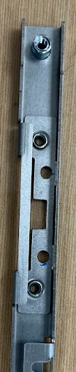
SOP A01：長鐵件拉釘工位
- 內含：扭力彈簧（163-30000-0157A0）+ 鋅合金鉸鏈座（357-30000-0286A0）+ 鉸鏈底蓋（357-30000-0291A0）
- L 款與 R 款鏡像對稱，鉸鏈方向相反
- 對應 SOP 站：A02（裝門鎖時同時固定鉸鏈）
- 檢驗：外觀無刮碰傷、彈簧不可變形、鋅合金件凸點需對位
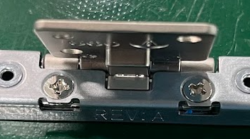
SOP A02：鉸鏈與門鎖鎖附
- SUS304 鐵件，沖壓成型
- 對應 SOP 站：S03 自動化模組 / A01
- 每批入治具：S03 一批 5 pcs（搭配 715、492 共 45 件鐵件）
- 檢驗：上料時須卡入定位 PIN；無漏拉、歪斜、浮高
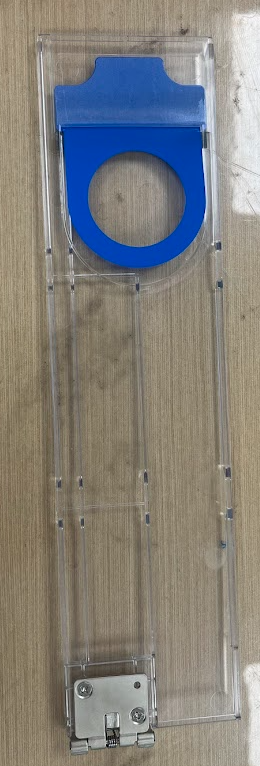
SOP S03：自動化拉釘治具
- SUS304 1/2H 鐵件，每個產品需 6 pcs
- 對應 SOP 站：S03 自動化拉釘 + A01 人工補拉
- S03 批量：30 pcs（5 個產品 × 6）
- 檢驗：兩兩孔位需對到孔；拉釘 18 pcs 將 6 pcs 715 與長鐵件固定
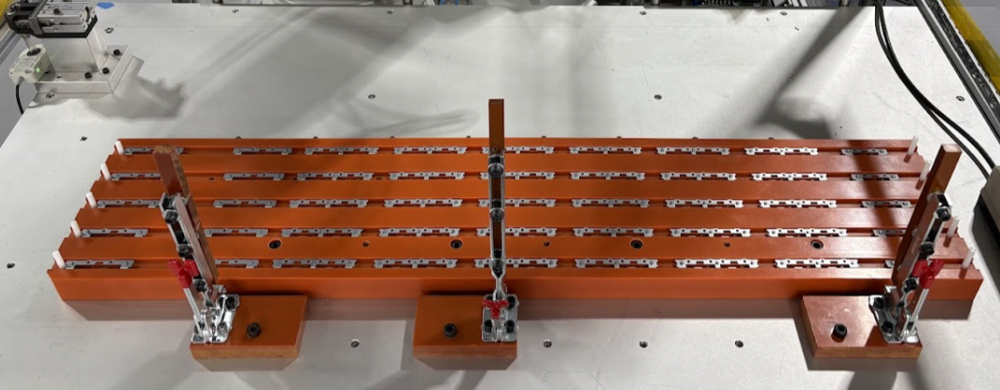
SOP S03：鐵件 715 批次入料
- SUS304 鐵件，每個產品需 2 pcs
- 對應 SOP 站：S03 自動化拉釘
- S03 批量：10 pcs（5 個產品 × 2）
- 檢驗：拉釘 120 pcs 不可漏拉、歪斜、浮高
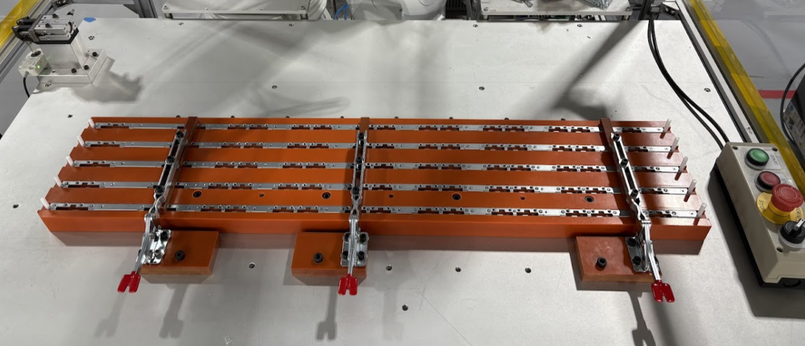
SOP S03：鐵件 492 拉釘成型
- 含彈簧、塑膠按鍵
- 對應 SOP 站：A02（5 pcs）+ A03（8 pcs）
- 每個門鎖以 2 pcs 螺絲（60H141230-054）固定
- 檢驗：外觀無有感刮/碰傷、氧化；螺絲不可漏鎖、鎖歪、浮高
- 扭力：5 ± 1 Kgf-cm
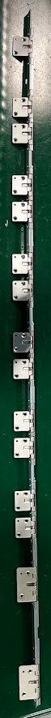
SOP A03：小門鎖鎖附
- 與鉸鏈模組相同料號家族
- 對應 SOP 站：A02（與 5 個小門鎖一起鎖附）
- 每個大門鎖以 2 pcs 螺絲固定
- 檢驗：外觀無刮碰傷；扭力 5 ± 1 Kgf-cm
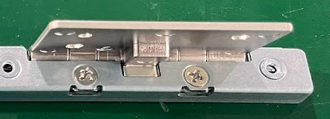
SOP A02：大門鎖鎖附
- 黑色烤漆塑膠件
- 對應 SOP 站：S02 大塑膠片加工（貼 1 pcs 導電泡棉 167-30000-0552A0）
- S02 標準工時 18 秒，UPH 200
- 檢驗：外觀無刮碰傷；黑色烤漆無漏烤、破損、錯位；導電泡棉不可漏貼、貼歪、破損
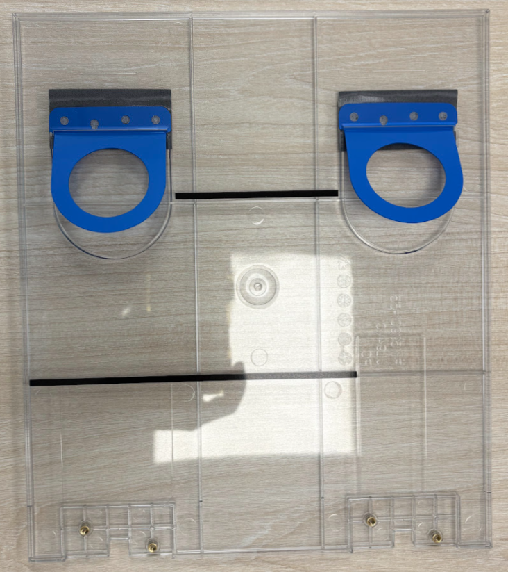
SOP S02：大塑膠片貼泡棉
- 黑色烤漆塑膠件，每個產品最大宗料件
- 對應 SOP 站：S01 中塑膠片加工（貼 2 pcs 短導電泡棉 167-30000-0553A0）
- S01 標準工時 18 秒，UPH 200
- 檢驗：外觀無刮碰傷；藍色把手、麥拉、貼紙均不可漏貼/破損
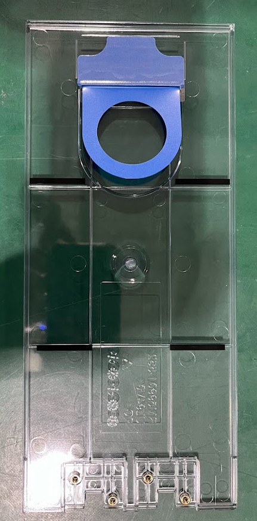
SOP S01：中塑膠片貼泡棉
- 黑色烤漆塑膠件，位於兩端
- 對應 SOP 站：A04（鎖螺絲）與大/中塑膠片一同鎖附於長鐵件
- A04 配置：1 大 + 6 中 + 1 小卡入治具，鎖 30 pcs 螺絲
- 檢驗：螺絲不可漏鎖、鎖歪、浮高；扭力 3 ± 1 Kgf-cm
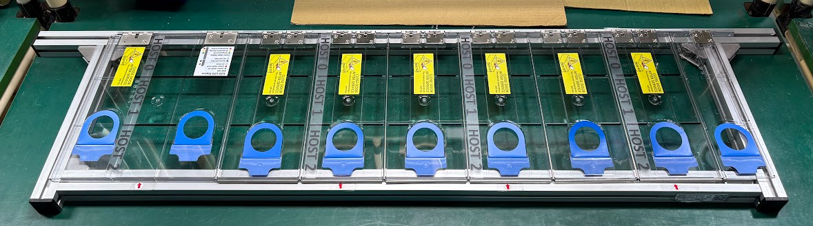
SOP A04：塑膠片陣列鎖附
- 規格：SC-FL-M-0.80-5.00-3.00-4-A（沉頭半圓拉釘）
- 用量：每個產品約 120 pcs
- 對應 SOP 站：S03 自動化拉釘 + A01 補拉
- 檢驗：不可漏拉、歪斜、浮高（SIP 標明 120 pcs 全數檢查）
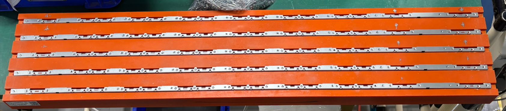
SOP A01：人工拉釘工位
- 用量分布：A02 14 pcs（門鎖）+ A03 16 pcs（門鎖）+ A04 30 pcs（塑膠片）
- 對應 SOP 站：S04 自動化螺絲 / A02 / A03 / A04
- 扭力規範：A02/A03 門鎖 5 ± 1 Kgf-cm；A04 塑膠片 3 ± 1 Kgf-cm
- 檢驗：不可漏鎖、鎖歪、浮高；凸點須對位
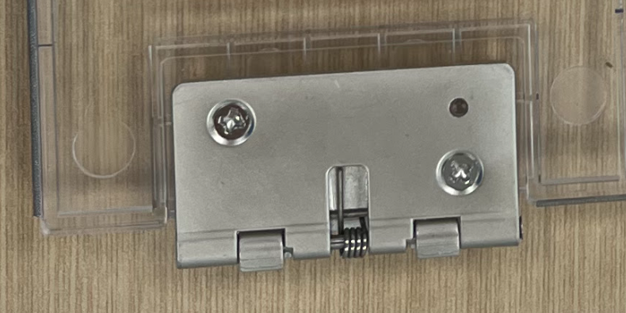
SOP A04：塑膠片鎖螺絲
- 5 種規格泡棉：短/長/側邊/上側/下側
- 對應 SOP 站：S01 / S02 / A05 / A06（多站貼附）
- A05 主要貼附：中塑膠片 5 pcs（左側）+ 6 pcs（凹槽）
- A06 補貼：大塑膠片右側 + 下側
- 檢驗：不可漏貼、貼歪、破損
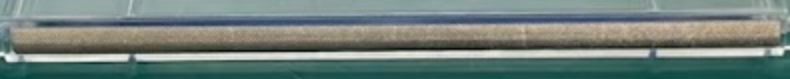
SOP A05：貼導電泡棉
- 含黃色貼紙 7 pcs（方向需一致）+ 半透明貼紙 4 pcs
- 對應 SOP 站：A05 + A06
- 使用檢具 CY-05J-0005 確認貼紙方向
- 檢驗：不可漏貼、皺褶、黏貼錯位、油墨模糊、貼反；生產週別、料號、REV 版本須正確
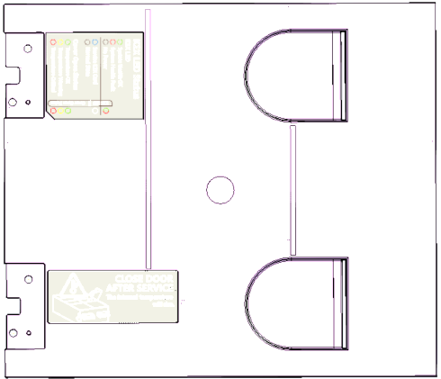
SOP A06：產品標籤
- 透明 PE 防靜電袋
- 對應 SOP 站：A06 包裝（標籤朝內放入，多餘 PE 袋內折）
- 裝箱前最後一步包覆
- 檢驗：袋子完整無破損；標籤需從外部可見料號
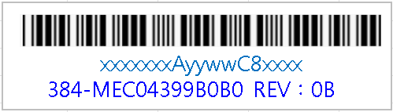
SOP A06：PE 袋包覆
- 包材：天地蓋 + 隔板 + 長刀卡 4 + 短刀卡 4 + 護角紙
- 對應 SOP 站：成品箱組裝 + A06 裝箱
- 裝箱規則：每格刀卡 4 pcs，標籤朝下；共 7 層；第 1、4、7 層各放 1 pcs 乾燥包
- 運輸：空運 4 箱/棧板，海運 4+4 箱/棧板
- 檢驗：包材無缺件、破損、髒污；成品不可超出棧板外圍
每台 5U 維護上蓋料件數量（依 BOM）
| 類別 | 料件 | 數量 |
|---|
| 主結構 | 長鐵件基座 | 1 |
| 主結構 | 鉸鏈模組（含彈簧+鋅合金） | 2 |
| 鐵件 | 小鐵件 493 / 715 / 492 | 5 + 30 + 10 |
| 塑膠片 | 大 / 中 / 小 | 2 + 12 + 2 |
| 門鎖 | 小門鎖 / 大門鎖 | 13 + 2 |
| 固定件 | 拉釘 / 螺絲 | ~50 / ~60 |
| 輔料 | 導電泡棉 | ~15 |
| 輔料 | 標籤 / PE 袋 | ~7 / 1 |
| 包裝 | 紙箱 / 棧板 / 隔板 | 1/64 + 1/256 + 7 隔板 |
| 每台主件總計（不含包裝） | ≈ 200+ pcs |
組裝站別配置（依 SOP5-184/185，9 人/條）
| 站 | 工站名稱 | 設備 | CT(s) | UPH |
|---|
| S01 | 中塑膠片加工（導電泡棉、貼紙） | Cell 桌 | 18 | 200 |
| S02 | 大塑膠片加工（導電泡棉、貼紙） | Cell 桌 | 18 | 200 |
| S03 | 自動化模組-1（拉釘）［批=5 pcs］ | 自動化模組 | 750/批 | 4.8 批
≈24 pcs |
| S04 | 自動化模組-2（螺絲）［批=1~2 pcs］ | 自動化模組 | 300/批 | 12 批
≈12-24 pcs |
| A01 | Cover 加工-1（拉釘）［批=5 pcs］ | Cell 桌 | 500/批 | 7.2 批
≈36 pcs |
| A02 | Cover 加工-2（裝門鎖、螺絲） | Cell 桌 | 100 | 36 ⚠ |
| A03 | Cover 加工-3（裝門鎖、螺絲） | Cell 桌 | 100 | 36 ⚠ |
| A04 | Cover 加工-4（鎖螺絲） | Cell 桌 | 100 | 36 ⚠ |
| A05 | Cover 加工-5（貼泡棉、貼紙） | Cell 桌 | 100 | 36 ⚠ |
| A06 | Cover 加工-6 + 品檢包裝（最終輸出口） | Cell 桌 | 100 | 36 ⚠ |
| 每條線總人員（S03/S04 共用 1 人） |
9 人 |
36 |
瓶頸與批次說明（依勤誠 SOP 與人員配置表）
- 整線瓶頸 = A02 ~ A06 五站皆 36 UPH（紅底） — 整段同步瓶頸，A06 是最終輸出口故產出 = 36 pcs/h
- 「批」= 自動化模組/A01 一次處理多個產品，例如 S03 一批塞 5pcs 鐵件套組（5+30+10）= 5 個產品；A01 一批 5 個產品
- 自動化模組（S03/S04）作業員上料完即可去做其他事，不卡整線節拍，所以官方 UPH 仍掛 36
- 月產約 6,000 pcs/條（36 × 8h × 22 工作天），2 條 ≈ 12,000 pcs/月
SIP 檢驗計畫（依勤誠提供之 SIP/自主檢查表/Rackmount 規範 R7.1）
① IQC 來料檢驗
- 週期：每批進料
- 方法：AQL 抽樣
- 負責：QC 部
- 文件：19 份 IQC SIP
- NG 處理：退貨/挑選 + 8D 通知供應商
② 製程自主檢查
- 週期：每 pcs 全檢
- 方法：手指指物目視到位點檢
- 負責：各站作業員
- 文件：自主檢查表 × 2（L+R）
- NG 處理：立即向領班反應
③ IPQC 製程巡檢
- 週期：每 1~2 小時巡檢
- 方法：抽樣 + 扭力儀
- 負責：IPQC 工程師
- 重點：扭力、拉釘、貼附
- 記錄：製程點檢表
④ OQC 出貨檢驗
- 週期：每出貨批
- 方法：AQL 抽樣 + Rackmount R7.1
- 負責：OQC 工程師
- 文件：出貨報告（範本已收到）
- NG 處理：暫扣出貨 + 重檢
各站自主檢查重點（依勤誠自主檢查表）
| 站 | 工站名稱 | 關鍵檢驗項目 | 數量/規格 | 扭力/工具 |
|---|
| S01 | 中塑膠片加工 |
導電泡棉 2 pcs 不可漏貼、貼歪、破損；黑色烤漆 4 處無漏烤；藍色把手 1 pcs；黑色麥拉 1 pcs；黃色貼紙 1 pcs |
每 pcs 全檢 | 手套 |
| S02 | 大塑膠片加工 |
導電泡棉 1 pcs 不可漏貼；黑色烤漆 2 處無漏烤；藍色把手 2 pcs；黑色麥拉 2 pcs |
每 pcs 全檢 | 手套 |
| S03 | 自動化模組-1（拉釘） |
上料時確認卡入定位 PIN；拉釘 120 pcs 不可漏拉、歪斜、浮高 |
每批 5 pcs 產品 | 自動化模組 + 治具 |
| S04 | 自動化模組-2（螺絲） |
上料時確認卡入定位；搭配機械手作業；螺絲不可漏鎖、鎖歪、浮高 |
每批 1~2 pcs | 自動化模組 + 機械手 |
| A01 | Cover 加工-1（拉釘） |
掃標籤；拉釘 120 pcs 全檢；確認鐵件兩兩孔位對齊 |
每批 5 pcs | 氣動拉釘槍、CY-05J-0014、掃碼槍 |
| A02 | Cover 加工-2（門鎖） |
5 pcs 小門鎖 + 2 pcs 大門鎖；螺絲 14 pcs 全檢；凸點對位 |
每 pcs 全檢 | 電動起子 5 ± 1 Kgf-cm |
| A03 | Cover 加工-3（門鎖） |
8 pcs 小門鎖；螺絲 16 pcs 全檢；凸點對位 |
每 pcs 全檢 | 電動起子 5 ± 1 Kgf-cm |
| A04 | Cover 加工-4（塑膠片） |
1 大 + 6 中 + 1 小塑膠片入治具；螺絲 30 pcs 全檢 |
每 pcs 全檢 | 電動起子 3 ± 1 Kgf-cm、CY-05J-0013 |
| A05 | Cover 加工-5（泡棉+貼紙） |
導電泡棉 5 + 6 pcs；黃色貼紙 7 pcs 方向一致；半透明貼紙 4 pcs |
每 pcs 全檢 | CY-05J-0005（方向檢具） |
| A06 | Cover 加工-6 + 包裝 |
導電泡棉補貼；標籤生產週別/料號/REV 正確；PE 袋；裝箱 7 層 + 1/4/7 層各 1 乾燥包 |
每 pcs 全檢 | 掃碼槍 |
IQC SIP 19 份 — 對應採購料件清單
鐵件類（4 份）
- SIP-355-30000-8043A0（鐵件）
- SIP-355-30000-8044A0（長鐵件 491）
- SIP-355-30000-8065A0（鐵件 492）
- SIP-355-30000-8122A0（鐵件 493）
- SIP-355-30001-1754A0（鐵件 715）
門鎖類（2 份）
- SIP-356-30000-2311A0（大門鎖/鉸鏈）
- SIP-356-30000-2490A0（小門鎖）
泡棉類（4 份）
- SIP-167-30000-0554A0
- SIP-167-30000-0555A0
- SIP-167-30000-0556A0
- SIP-167-30000-0557A0
塑膠片類（8 份）
- SIP-383-30001-1130A0（小塑膠片）
- SIP-383-30001-1133A0（中塑膠片）
- SIP-383-30001-179600（大塑膠片）
- SIP-383-30001-180200、180400
- SIP-383-30001-180800、180900、181100
固定件（2 份）
- SIP-171-00032-200210（拉釘）
- SIP-60H141230-054（螺絲）
※ 全 19 份 IQC SIP 已收到，存於 ~/Desktop/勤誠組裝/.../IQC_SIP/；建議建立 IQC 收料 SOP 並對應勤誠送料批號。
檢驗風險點（依 SIP 內容彙整）
- 拉釘漏拉風險：每台 120 pcs，全檢容易遺漏 → 建議導入 AOI 影像比對
- 扭力管控：A02/A03 5 Kgf-cm vs A04 3 Kgf-cm 不同 → 起子需貼明顯標籤
- L/R 混料：L 與 R 鏡像對稱 → 站別需明確分線或時段隔離
- 標籤錯版：生產週別/REV 印錯為勤誠重大不良 → 進料即查 + 換 lot 時複查
- 泡棉貼歪：15+ pcs 多規格易誤貼 → 治具孔位指引
檢驗人力與設備需求
- IQC 1 人：依 SIP 抽檢來料，含扭力儀、卡尺、AOI（共用）
- IPQC 1 人（兩線共用）：每小時巡檢扭力、拉釘、貼附
- OQC 1 人：依 Rackmount R7.1 抽樣，與出貨報告連動
- 檢驗設備：扭力儀 × 2、卡尺 × 4、檢具 CY-05J-0005、AOI（建議）
- 檢驗成本：3 人 × 36,800 = 11.04 萬/月（已含於 18 人之外，需另列）
本期定案前需釐清：勤誠 SOP 9 人/條 不含 IQC/IPQC/OQC。
若鴻騰需自負來料+製程+出貨檢驗，需額外 3 人（兩線共用） → 整廠 21 人，年人力增加約 132 萬。
建議向業務確認：勤誠是否提供現場 SQA 駐廠？或由鴻騰 QC 部支援？
Cell 桌作業模式說明（為何不採用輸送帶皮帶線）
什麼是 Cell 桌？
Cell 桌（Cell Table / 細胞工作桌）是電子業組裝廠常見的單站獨立作業桌，與輸送帶皮帶線是兩種完全不同的生產模式。
| 項目 | 輸送帶皮帶線 | Cell 桌（本案採用） |
|---|
| 運作比喻 | 迴轉壽司，產品在皮帶上流動 | 麵店每張桌獨立做菜，產品手傳 |
| 產品傳遞 | 馬達皮帶自動輸送 | 作業員手抱傳到下一站 |
| 站別 CT 差異 | 差異大會塞車或空轉 | 差異大也 OK，各站獨立節拍 |
| 換線彈性 | 需停線重設皮帶速度 | 換治具即可，桌子不動 |
| 投資成本 | 2 條約 100 萬 | 18 張約 20 萬 |
| 適用產品 | 大型、重、體積大 | 中小型、輕、體積小 |
Cell 桌規格與本案採用原因
業界標準規格：
- 尺寸：W1500 × D750 × H750 mm
- 桌面：防靜電（ESD）橡膠墊
- 結構：鋁擠型 + 鐵腳，可調高度
- 配件：上方層架 + 燈管 + 氣管 + 插座
- 單價：NT$ 8,000～15,000 / 張
為何勤誠 SOP 採用 Cell 桌（5 個原因）：
- 產品小、輕 — 5U 維護上蓋僅 550×430×180 mm，作業員手抱即可
- 站別 CT 差異大 — S01/S02 僅 18 秒，A01 達 500 秒，皮帶線會塞車
- L+R 換線彈性 — 換治具即可，桌子不必動
- 投資低 — 18 張 Cell 桌約 20 萬 vs 2 條皮帶線約 100 萬
- SOP 已驗證 — 勤誠嘉義廠就是此配置，鴻騰複製 SOP 風險最低
Cell 桌排列示意（每條線 9 人）：
[S01桌] → [S02桌] → [A01桌] → [A02桌] → [A03桌] → [A04桌] → [A05桌] → [A06桌+包裝]
↑ 作業員手抱半成品從一張桌傳到下一張桌（S03/S04 自動化模組獨立區，兩條線共用） ↑
待業務 / 客戶確認事項（影響最終線體與空間規劃）
① Cell 桌排列與桌間距
- 目前以「每張桌 W1.5m × D0.75m + 桌間走道 1.0m」估算
- 需向業務確認：勤誠嘉義廠實際 Cell 桌規格與排列方式？
- 是否需雙側作業（兩人面對面共用一張桌）→ 影響桌深與動線
- 是否預留備料區 / sub-assembly 桌？
- 桌間距若拉到 1.5m，每條線多 5 坪（含 QC 走道）
② 兩條 15m 可重排為 30m 單線（同一批 Cell 桌）
- 採購規格相同 — Cell 桌 × 18 張，視訂單型態彈性排列
- 並排運作（預設）：L+R 雙款並行，單線停產不影響另一線
- 首尾接續為 30m：站別細分、單件流順暢、適合單一機種長流程
- 切換成本極低：只需把桌子推到不同位置，不需加購桌子
- 串聯模式廠房長邊需 ≥ 30m（含進出料區）
③ 治具歸屬與自動化模組規格
- SOP 已提供 ✅ — 單一機種 SIP（L 款 + R 款）已收到
- 需確認：治具 CY-05J-0005/0013/0014 是勤誠供應 or 鴻騰自開？
- 需確認：自動化模組（S03/S04）規格與藍圖，鴻騰能否自製或須勤誠介紹廠商
- 另需確認 19 份 IQC SIP 對應的來料檢驗範圍
- 建議 5/29 前列入鴻騰回覆勤誠的清單
廠房空間需求估算（15m × 2 條版本）
換算基準：1 台坪 = 3.3058 m² ｜ 產品：5U 維護上蓋（小 module），成品約 550×430×180 mm（依 BOM 紙箱規格）
⚠ 依產品實際尺寸重估：
產品為小 module（非大型機櫃），無需大型叉車與重型棧板；成品可疊放（64 pcs/箱），暫存空間大幅縮減。
Cell 桌排列每條約 15m × 4m，組裝區僅需 60-70 坪。整體最低需求約 100 坪，建議租 120 坪（含 20% 緩衝）。
| 區域 | 機櫃產品說明 | 長×寬(m) |
m² | 台坪 |
vs 一般零件 |
|---|
| Cell 桌組裝區 |
10 站 × 2 條，每站桌面 1.5m + 走道 |
15 × 8 |
120 |
36 |
小 module 較緊湊 |
| 自動化模組區 |
S03/S04 設備，含上下料 R1/R2 工位 |
5 × 4 |
20 |
6 |
兩線共用 |
| 原料暫存區 |
料件多但體積小（鐵件/塑膠片/泡棉） |
8 × 5 |
40 |
12 |
輕型棧板 + 料架 |
| 成品暫存區 |
紙箱（550×430×180）可疊放 4-5 層 |
6 × 5 |
30 |
9 |
含棧板裝箱區 |
| 辦公 / 主管區 |
工程師、線長、電腦站 |
6 × 4 |
24 |
7 |
相同 |
| QC / IQC 檢驗區 |
SIP 來料檢驗（19 份 IQC SIP）+ 成品 QC |
5 × 4 |
20 |
6 |
新增（依 SIP） |
| 設備 / 空壓 / 工具 |
空壓機、工具架、充電站 |
4 × 3 |
12 |
4 |
小型化 |
| 主通道 / 緩衝 |
1.5m 通道 + 消防動線 |
— |
60 |
18 |
小 module 無需叉車道 |
| ✅ 5U 維護上蓋小 module 最低需求合計 |
326 m² |
98 坪 |
大幅縮編 |
| 📦 建議租用（含 20% 緩衝 + 物流動線） |
396 m² |
120 坪 |
含彈性擴充 |
| 🔄 串聯運作模式：兩條 15m 首尾相接為 30m 單線（廠房長邊需 ≥ 36m） |
約 350 m² |
約 106 坪 |
同一套設備 |
平面配置示意（5U 小 module 版，約 24m × 16m ≈ 384 m²）
串聯運作模式：兩條 15m 首尾相接 → 30m 單線 — 同一批 Cell 桌、不需加購，只需把桌子推到不同位置（無皮帶不需重設）。
廠房長邊需 ≥ 36m（含進出料），整體面積與並排約 200 坪相近。
站別可細分、單件流順暢，適合客戶單一機種長流程（待 SIP 確認後決定預設配置）。
廠房規格（5U 小 module）
- 面積：120～150 坪（最低 100）
- 樓高：3.5m 以上（一般廠房即可）
- 地板承重：≥ 500 kg/m²（小料件）
- 三相電力：50～80 kVA
- 裝卸月台：1 座即可（一般貨車）
- ESD 防靜電地板：建議組裝區鋪設
租金估算（新北林口工業區）
- 工業廠房租金：900～1,800 元/坪/月（林口行情）
- 120 坪 × 1,300 元 = 15.6 萬/月（中估）
- 年租金：約 130～260 萬
- 押金：通常 2～3 個月（~30～80 萬）
- ESD 地坪/裝修：另加 30～80 萬
- 優勢：近 64 快速道路、機場捷運，距勤誠（新店/桃園）車程短、技轉與物流便利
小 module 風險
- 料件種類多（200+ pcs）→ 料件管控難度高
- 導電泡棉/貼紙易刮損 → ESD 與作業環境要求
- 瓶頸在 A06 包裝 → 瓶頸破除可提升產能
- 自動化模組依賴勤誠規格 → 設備規格未鎖定有變動風險
- 3% 利潤薄 → 單台代工費需 2,200+ 元才回收
關鍵建議
✅ 優先投資項目
- 自動化模組 × 1 套（依勤誠 SOP S03/S04 規格）
- Cell 桌 × 18 張（取代輸送帶線體）
- 專用治具 3 種（CY-05J-0005/0013/0014）
- 工控電腦 + 掃碼系統（Shop Floor 預留）
⚠ 財務風險提示
- 瓶頸 A06 包裝 36 pcs/h，月產約 6,000 pcs/條
- 3% 利潤 → 單台代工費需 2,500+ 元才回收首年（含林口租金）
- 建議談「工時計費」或「按 BOM 成本加成」
- 16 人最佳化版可省 ~96 萬/年
📋 建議執行順序（5/29 前完成定案）
- 確認治具歸屬（勤誠供應 or 鴻騰自開）
- 確認自動化模組規格（向勤誠取得藍圖）
- 採購 Cell 桌 × 18 + 自動化模組 × 1 套
- 派員至嘉義廠學習 SOP（會議共識第 4 項）
- 2026 Q4 量穩後評估擴 25m 線 + 沖壓機